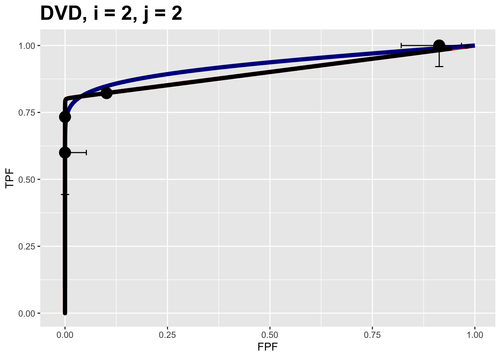

Chapter 8 Three proper ROC fits
8.2 TBA Introduction
A proper ROC curve is one whose slope decreases monotonically as the operating point moves up the curve, a consequence of which is that a proper ROC does not display an inappropriate chance line crossing followed by a sharp upward turn, i.e., a “hook”, usually near the (1,1) upper right corner.
There are three methods for fitting proper curves to ROC datasets:
- The radiological search model (RSM) described in Chapter 7,
- The PROPROC (proper ROC) model described in TBA Chapter 20.
- The CBM (contaminated binormal model) described in TBA Chapter 20.
This chapter compares these methods by fitting the to 14 multiple-treatment multiple-reader datasets described in Chapter 12.32
Both RSM and CBM are implemented in RJafroc. PROPROC is implemented in Windows software33 available here, last accessed 1/4/21.
8.3 Application to two datasets
The RSM, PROPROC and CBM algorithms were applied to the 14 datasets described in Chapter 12.
datasetNames <-
c("TONY", "VD", "FR",
"FED", "JT", "MAG",
"OPT", "PEN", "NICO",
"RUS", "DOB1", "DOB2",
"DOB3", "FZR")In the following we focus on just two ROC datasets which have been widely used in the literature to illustrate ROC methodological advances, namely the Van Dyke (VD) and the Franken (FR) datasets.
results <- array(list(), dim = 2)
results[[1]] <- Compare3ProperRocFits(datasetNames, 2) # VD dataset
results[[2]] <- Compare3ProperRocFits(datasetNames, 3) # FR dataset
resultsArr <- plotArr <- array(list(), dim = 2)
for (i in 1:2) {
plotArr[[i]] <- results[[i]]$allPlots
resultsArr[[i]] <- results[[i]]$allResults
}- The supporting code is in the function
Compare3ProperRocFits()located atR/compare-3-fits/Compare3ProperRocFits.R. - The analyzed results file locations are shown in Section 8.10.2.
- The fitted parameter results are contained in
resultsArrand the composite plots (i.e., 3 combined plots corresponding to the three proper ROC fitting algorithms for each treatment and reader) are contained inplotArr.
8.4 Composite plots
- The
plotArrlist contains plots for the two datasets. The Van Dyke plots are inplotArr[[1]]and the Franken inplotArr[[2]]. The double bracket isR-usage to indexlists. - The Van Dyke dataset contains \(I \times J = 2 \times 5 = 10\) composite plots.
- The Franken dataset contains \(I \times J = 2 \times 4 = 8\) composite plots.
- The following shows how to display the composite plot for the Van Dyke dataset for treatment 1 and reader 2.

The plot is labeled D2, i = 1, j = 2, meaning the second dataset in the datasetNames array, i.e., datasetNames[2], the second treatment and the second reader. It contains 3 plots:
- The RSM fitted curve is in black.
- The PROPROC fitted curve is in red.
- The CBM fitted curve is in blue.
- Three operating points from the binned data are shown as well as 95% confidence intervals for the lowest and uppermost operating points.
All 10 composite plots for the Van Dyke dataset are shown in Appendix 8.10.3.
8.5 RSM parameters
The parameters corresponding to the RSM plots are accessed as shown next.
resultsArr[[1]][[1,2]]$retRsm$muis the RSM \(\mu\) parameter for the Van Dyke dataset for treatment 1 and reader 2,resultsArr[[1]][[1,2]]$retRsm$lambdaPis the RSM \(\lambda'\) parameter;
resultsArr[[1]][[1,2]]$retRsm$nuPis the RSM \(\nu'\) parameter;resultsArr[[1]][[1,2]]$retRsm$zeta1is the RSM \(\zeta_1\) parameter;- In general the values are accessed as
[[f]][[i,j]], wherefis the dataset index,iis the treatment index andjis the reader index; - For the Van Dyke dataset
f = 1and for the Franken datasetf = 2.
The following displays RSM parameters for the Van Dyke dataset, treatment 1 and reader 2:
## RSM parameters, Van Dyke Dataset, treatment 1, reader 2:
## mu = 2.201413
## lambdaP = 0.2569453
## nuP = 0.7524016
## zeta_1 = -0.1097901
## AUC = 0.8653694
## sigma_AUC = 0.04740562
## NLLini = 96.48516
## NLLfin = 85.86244The first four values are the fitted values for the RSM parameters \(\mu\), \(\lambda'\), \(\nu'\) and \(\zeta_1\). The next value is the AUC under the fitted RSM curve followed by its standard error. The last two values are the initial and final values of negative log-likelihood.34
Displayed next are RSM parameters for the Franken dataset, treatment 2 and reader 3:
## RSM parameters, Franken dataset, treatment 2, reader 3:
## mu = 2.641412
## lambdaP = 2.137379
## nuP = 0.784759
## zeta_1 = -1.858565
## AUC = 0.8552573
## sigma_AUC = 0.03809136
## NLLini = 132.6265
## NLLfin = 127.94188.6 CBM parameters
The parameters of the CBM plots are accessed as shown next.
resultsArr[[f]][[i,j]]$retCbm$muis the CBM \(\mu\) parameter;resultsArr[[f]][[i,j]]$retCbm$alphais the CBM \(\alpha\) parameter;
as.numeric(resultsArr[[f]][[i,j]]$retCbm$zetas[1])is the CBM \(\zeta_1\) parameter, the threshold corresponding to the highest non-trivial operating point;resultsArr[[f]][[i,j]]$retCbm$AUCis the CBM AUC;as.numeric(resultsArr[[f]][[i,j]]$retCbm$StdAUC)is the standard deviation of the CBM AUC;resultsArr[[f]][[i,j]]$retCbm$NLLIniis the initial negative log-likelihood value;rresultsArr[[f]][[i,j]]$retCbm$NLLFin)is the final negative log-likelihood value.
The next example displays CBM parameters and AUC etc. for the Van Dyke dataset, treatment 1 and reader 2:
## CBM parameters, Van Dyke Dataset, treatment 1, reader 2:
## mu = 2.745791
## alpha = 0.7931264
## zeta_1 = 1.125028
## AUC = 0.8758668
## sigma_AUC = 0.03964492
## NLLini = 86.23289
## NLLfin = 85.88459The next example displays CBM parameters for the Franken dataset, treatment 2 and reader 3:
## CBM parameters, Franken dataset, treatment 2, reader 3:
## mu = 2.340719
## alpha = 0.7860465
## zeta_1 = -1.144089
## AUC = 0.8545476
## sigma_AUC = 0.03825439
## NLLini = 131.8453
## NLLfin = 128.0437The first three values are the fitted values for the CBM parameters \(\mu\), \(\alpha\) and \(\zeta_1\). The next value is the AUC under the fitted CBM curve followed by its standard error. The last two values are the initial and final values of negative log-likelihood.
8.7 PROPROC parameters
PROPROC displayed parameters are accessed as follows:
resultsArr[[f]][[i,j]]$c1is the PROPROC \(c\) parameter;resultsArr[[f]][[i,j]]$dais the PROPROC \(d_a\) parameter;
resultsArr[[f]][[i,j]]$aucPropis the PROPROC AUC;
Other statistics, such as standard error of AUC, are not provided by PROPROC software.
The next example displays PROPROC parameters for the Van Dyke dataset, treatment 1 and reader 2:
## PROPROC parameters, Van Dyke Dataset, treatment 1, reader 2:
## c = -0.2809004
## d_a = 1.731472
## AUC = 0.8910714The values are identical to those listed for treatment 1 and reader 2 in Fig. 8.6.
The next example displays PROPROC parameters for the Franken dataset, treatment 2 and reader 3:
## PROPROC parameters, Franken dataset, treatment 2, reader 3:
## c = -0.3551936
## d_a = 1.401807
## AUC = 0.8541372The next section provides an overview of the most salient findings from analyzing the datasets.
8.8 Overview of findings
With 14 datasets the total number of individual modality-reader combinations is 236: in other words, there are 236 datasets to each of which three fitting algorithms were applied.
It is easy to be overwhelmed by the numbers and this section summarizes an important conclusion:
The three fitting methods are consistent with a single method-independent AUC.
If the AUCs of the three methods are identical the following relations hold with each slope \(\text{m}_{PR}\) and \(\text{m}_{CR}\) equal to unity:
\[\begin{equation} \left. \begin{aligned} \text{AUC}_{PRO} =& \text{m}_{PR} \text{AUC}_{PRO} \\ \text{AUC}_{CBM} =& \text{m}_{CR} \text{AUC}_{PRO} \\ \text{m}_{PR} =& 1 \\ \text{m}_{CR} =& 1 \end{aligned} \right \} \tag{8.1} \end{equation}\]
The abbreviations are as follows:
- PRO = PROPROC
- PR = PROPROC vs. RSM
- CR = CBM vs. RSM.
For each dataset the plot of PROPROC AUC vs. RSM AUC should be linear with zero intercept and slope \(\text{m}_{PR}\), and likewise for the plots of CBM AUC vs. RSM AUC. The reason for the zero intercept is that if the AUCs are identical one cannot have an offset (i.e., intercept) term.
8.8.1 Slopes
Denote PROPROC AUC for dataset \(f\), treatment \(i\) and reader \(j\) by \(\text{AUC}^{PRO}_{fij}\). Likewise, the corresponding RSM and CBM values are denoted by \(\text{AUC}^{RSM}_{fij}\) and \(\text{AUC}^{CBM}_{fij}\), respectively.
For a given dataset the slope of the PROPROC values vs. the RSM values is denoted \(\text{m}_{PR,f}\).
The (grand) average over all datasets is denoted \(m^{PR}_\bullet\). Likewise, the (grand) average of the CBM AUC vs. the RSM slopes is denoted \(m^{CR}_\bullet\).
An analysis was conducted to determine the average slopes and bootstrap confidence intervals.
The code for calculating the average slopes is in R/compare-3-fits/slopesConvVsRsm.R and that for the bootstrap confidence intervals is in R/compare-3-fits/slopesAucsConvVsRsmCI.R.
The call to function slopesConvVsRsm() returns slopes, which contains, for each of 14 datasets, four lists: two plots and two slopes. For example:
- PRO vs. RSM:
slopes$p1[[2]]is the plot of \(\text{AUC}^{PRO}_{2 \bullet \bullet}\) vs. \(\text{AUC}^{RSM}_{2 \bullet \bullet}\) for all treatments and readers in the Van Dyke dataset. The plot for dataset \(f, f = 1, 2, ...14\) is accessed asslopes$p1[[f]]which yields the plot of \(\text{AUC}^{PRO}_{f \bullet \bullet}\) vs. \(\text{AUC}^{RSM}_{f \bullet \bullet}\). - CBM vs. RSM:
slopes$p2[[2]]is the plot of \(\text{AUC}^{CBM}_{2 \bullet \bullet}\) vs. \(\text{AUC}^{RSM}_{2 \bullet \bullet}\) for for all treatments and readers in the Van Dyke dataset. The plot for dataset \(f\) is accessed asslopes$p2[[f]]. - PRO vs. RSM:
slopes$m_pro_rsmhas two columns, each of length 14, the slopes \(\text{m}_{PR,f}\) for the datasets (indexed by \(f\)) and the corresponding \(R^2\) values, where \(R^2\) is the fraction of variance explained by the constrained straight line fit. The first column isslopes$m_pro_rsm[[1]]and the second column isslopes$m_pro_rsm[[2]]. - CBM vs. RSM:
slopes$m_cbm_rsmhas two columns, each of length 14, the slopes \(\text{m}_{CR,f}\) for the datasets and the corresponding \(R^2\) values. The first column isslopes$m_cbm_rsm[[1]]and the second column isslopes$m_cbm_rsm[[2]].
As an example, for the Van Dyke dataset, slopes$p1[[2]] which is shown in the left in Fig. 8.1, is the plot of \(\text{AUC}^{PRO}_{2 \bullet \bullet}\) vs. \(\text{AUC}^{RSM}_{2 \bullet \bullet}\). Shown in the right is slopes$p2[[2]], the plot of \(\text{AUC}^{CBM}_{2 \bullet \bullet}\) vs. \(\text{AUC}^{RSM}_{2 \bullet \bullet}\). Each plot has the constrained linear fit superposed on the \(2\times5 = 10\) data points; each data point represents a distinct modality-reader combination.

FIGURE 8.1: Van Dyke dataset: Left plot is PROPROC-AUC vs. RSM-AUC with the superposed constrained linear fit. The number of data points is nPts = 10. Right plot is CBM-AUC vs. RSM-AUC.
The next plot shows corresponding plots for the Franken dataset in which there are \(2\times 4 = 8\) points in each plot.
FIGURE 8.2: Similar to previous plot, for Franken dataset.
8.8.2 Confidence intervals
The call to slopesAucsConvVsRsmCI returns slopeCI, containing the results of the bootstrap analysis (the bullet symbols \(\bullet\) denote grand averages over 14 datasets):
slopeCI$cislopeProRsm95-percent confidence interval for \(m_{PR \bullet}\)slopeCI$cislopeCbmRsm95-percent confidence interval for \(m_{CR \bullet}\)slopeCI$histSlopeProRsmhistogram of 200 bootstrap values of \(m_{PR \bullet}\)slopeCI$histSlopeCbmRsmhistogram of 200 bootstrap values of \(m_{CR \bullet}\)slopeCI$ciAvgAucRsmconfidence interval from 200 bootstrap values of \(\text{AUC}^{RSM}_\bullet\)slopeCI$ciAvgAucProconfidence interval for 200 bootstrap values of \(\text{AUC}^{PRO}_\bullet\)slopeCI$ciAvgAucCbmconfidence interval for 200 bootstrap values of \(\text{AUC}^{CBM}_\bullet\)
As examples,
## m-PR m-CR
## 2.5% 1.005092 0.9919886
## 97.5% 1.012285 0.9966149The CI for \(m_{PR \bullet}\) is slightly above unity, while that for \(m_{CR \bullet}\) is slightly below. Shown next is the histogram plot for \(m_{PR \bullet}\) (left plot) and \(m_{CR \bullet}\) (right plot). Quantiles of these histograms were used to compute the confidence intervals cited above.

FIGURE 8.3: Histograms of slope PROPROC AUC vs. RSM AUC (left) and slope CBM AUC vs. RSM AUC (right).
8.8.3 Summary of slopes and confidence intervals
| \(\text{m}_{PR}\) | \(R^2_{PR}\) | \(\text{m}_{CR}\) | \(R^2_{CR}\) | |
|---|---|---|---|---|
| TONY | 1.0002 | 0.9997 | 0.9933 | 0.9997 |
| VD | 1.0061 | 0.9998 | 1.0007 | 1 |
| FR | 0.9995 | 1 | 0.9977 | 1 |
| FED | 1.0146 | 0.9998 | 0.9999 | 0.9999 |
| JT | 0.9964 | 0.9995 | 0.9972 | 1 |
| MAG | 1.036 | 0.9983 | 0.9953 | 1 |
| OPT | 1.0184 | 0.9997 | 1.0059 | 0.9997 |
| PEN | 1.0081 | 0.9996 | 0.9976 | 1 |
| NICO | 0.9843 | 0.9998 | 0.997 | 1 |
| RUS | 0.9989 | 0.9999 | 0.9921 | 0.9999 |
| DOB1 | 1.0262 | 0.9963 | 0.9886 | 0.9962 |
| DOB2 | 1.0056 | 0.9987 | 0.971 | 0.9978 |
| DOB3 | 1.0211 | 0.998 | 0.9847 | 0.9986 |
| FZR | 1.0027 | 0.9999 | 0.9996 | 1 |
| AVG | 1.0084 | 0.9992 | 0.9943 | 0.9994 |
| CI | (1.005, 1.012) | NA | (0.992, 0.997) | NA |
In Table 8.1 the second column, labeled \(\text{m}_{PR}\), shows slopes of straight lines, constrained to go through the origin, to PROPROC AUC vs. RSM AUC values, for each of the 14 datasets, as labeled in the fits column. The third column, labeled \(R^2_{PR}\), lists the square of the correlation coefficient for each fit. The fourth and fifth columns list the corresponding values for the CBM AUC vs. RSM AUC fits. The second last row lists the grand averages (AVG) and the last row lists the 95 percent confidence intervals.
8.10 Appendices
8.10.1 Location of PROPROC files
For each dataset PROPROC parameters were obtained by running the Windows software with PROPROC selected as the curve-fitting method. The results are saved to files that end with proprocnormareapooled.csv35 contained in “R/compare-3-fits/MRMCRuns/C/”, where C denotes the name of the dataset (for example, for the Van Dyke dataset, C = “VD”). Examples are shown in the next two screen-shots.

FIGURE 8.4: Screen shot (1 of 2) of R/compare-3-fits/MRMCRuns showing the folders containing the results of PROPROC analysis on 14 datasets.

FIGURE 8.5: Screen shot (2 of 2) of R/compare-3-fits/MRMCRuns/VD showing files containing the results of PROPROC analysis for the Van Dyke dataset.
The contents of R/compare-3-fits/MRMCRuns/VD/VDproprocnormareapooled.csv are shown next, see Fig. 8.6.36 The PROPROC parameters \(c\) and \(d_a\) are in the last two columns. The column names are T = treatment; R = reader; return-code = undocumented value, area = PROPROC AUC; numCAT = number of ROC bins; adjPMean = undocumented value; c = \(c\) and d_a = \(d_a\), are the PROPROC parameters defined in (Metz and Pan 1999).

FIGURE 8.6: PROPROC output for the Van Dyke ROC data set. The first column is the treatment, the second is the reader, the fourth is the AUC and the last two columns are the c and \(d_a\) parameters.
8.10.2 Location of pre-analyzed results
The following screen shot shows the pre-analyzed files created by the function Compare3ProperRocFits() described below. Each file is named allResultsC, where C is the abbreviated name of the dataset (uppercase C denotes one or more uppercase characters; for example, C = VD denotes the Van Dyke dataset.).

FIGURE 8.7: Screen shot of R/compare-3-fits/RSM6 showing the results files created by Compare3ProperRocFits().
8.10.3 Plots for Van Dyke dataset
The following plots are arranged in pairs, with the left plot corresponding to treatment 1 and the right to treatment 2.
FIGURE 8.8: Composite plots in both treatments for Van Dyke dataset, reader 1.
FIGURE 8.9: Composite plots in both treatments for Van Dyke dataset, reader 2. For treatment 2 the RSM and PROPROC fits are indistinguishable.
The RSM parameter values for the treatment 2 plot are: \(\mu\) = 5.9346513, \(\lambda'\) = 0.3809031, \(\nu'\) = 0.9292484, \(\zeta_1\) = 0.479145. The corresponding CBM values are \(\mu\) = 5.9356142, \(\alpha\) = 0.9292952, \(\zeta_1\) = 1.20877. The RSM and CBM \(\mu\) parameters are very close and likewise the RSM \(\nu'\) and CBM \(\alpha\) parameters are very close - this is because they have similar physical meanings, which is investigated later in this chapter TBA. [The CBM does not have a parameter analogous to the RSM \(\lambda'\) parameter.]
FIGURE 8.10: Composite plots in both treatments for Van Dyke dataset, reader 3.
The RSM parameters for the treatment 1 plot are: \(\mu\) = 2.2014133, \(\lambda'\) = 0.2569453, \(\nu'\) = 0.7524016, \(\zeta_1\) = -0.1097901. The corresponding CBM values are \(\mu\) = 2.7457914, \(\alpha\) = 0.7931264, \(\zeta_1\) = 1.1250285.
FIGURE 8.11: Composite plots in both treatments for Van Dyke dataset, reader 4. For treatment 2 the 3 plots are indistinguishable and each one has AUC = 1. The degeneracy is due to all operating points being on the axes of the unit square.
FIGURE 8.12: Composite plots in both treatments for Van Dyke dataset, reader 5.
REFERENCES
Metz, Charles E, and Xiaochuan Pan. 1999. “‘Proper’ Binormal Roc Curves: Theory and Maximum-Likelihood Estimation.” Journal of Mathematical Psychology 43 (1): 1–33.
Comparing the RSM to the binormal model would be inappropriate, as the latter does not predict proper ROCs.↩︎
OR DBM-MRMC 2.5, Sept. 04, 2014; the version used in this chapter is no longer distributed but is available from me upon request.↩︎
The initial value is calculated using initial estimates of parameters and the final value is that resulting from the log-likelihood maximization procedure. Since negative log-likelihood is being minimized, the final value is smaller than the initial value.↩︎
In accordance with R-package policies white-spaces in the original
PROPROCoutput file names have been removed.↩︎The
VD.lrcfile in this directory is the Van Dyke data formatted for input to OR DBM-MRMC 2.5.↩︎